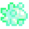
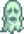
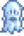
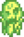

Ectoplasm
Jump to navigation
Jump to search
| Ectoplasm | |
 |
|
| A thick, slimy goop that the Wizard wants for some reason. | |
| Information | |
| Source |  Ghost (9.5%) Carbon Ghost (9.5%) Putrid Ghost (9.5%) |
| Sell Price | Cannot be sold |
Ectoplasm is an item which is required for the special order "A Curious Substance". It has a 9.5% chance to be dropped by Ghosts, Carbon Ghosts, and Putrid Ghosts while the quest is active.
One Ectoplasm must be given to the Wizard to complete the quest, and any not given will disappear once the order is complete or expired.
Trivia
- PC only: Ectoplasm can be spawned using the item ID glitch, using the code [875] and gifted as a universally hated gift.
History
- 1.5: Introduced.